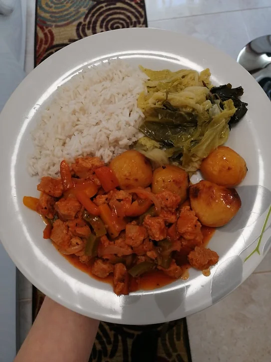

Soja Granulada Estufada
Tempo de preparação
5min
Horas de Cozimento
25min
Tempo Total
30min
Porções
4/5

Ingredientes
- 1 cebola cortada finamente às meias luas
- 1 alho laminado
- soja granulada q.b demolhada, lavada e escorrida
- ½ pimento vermelho cortado aos quadrados médios
- ½ pimento verde cortado aos quadrados médios
- ½ pimento amarelo cortado aos quadrados médios
- azeite q.b
- sal q.b
- pimenta preta q.b
- alho em pó q.b
- pimentão doce q.b
- manjericão q.b
- polpa de tomate q.b
- 1 copo de vinho branco
- 1 cchá de vinagre de sidra
Instruções
- No dia anterior coloque a soja granulada de molho para depois ser mais fácil de a confeccionar.
- Numa panela, leve a saltear num fio de azeite a cebola e o alho. Quando estiverem transparentes adicione a soja granulada e deixe saltear durante 3 minutos. Tempere com sal, pimenta preta, alho em pó, pimentão doce e manjericão.
- Quando a soja tiver absorvido o sabor do estrugido e dos temperos, acrescente o copo de vinho branco, a polpa de tomate e a colher de chá de vinagre de sidra. Deixe refogar durante 10 minutos no fogo médio.
- Depois, acrescente meio a um copo de água, adicione os pimentos coloridos e retempere se necessário com sal, pimenta preta, alho em pó, manjericão, polpa de tomate e vinho branco.
- Quando os pimentos estiverem cozidos, está pronto a servir com um arroz branco seco! ou como eu, que adicionei batata assada no forno e legumes salteados!